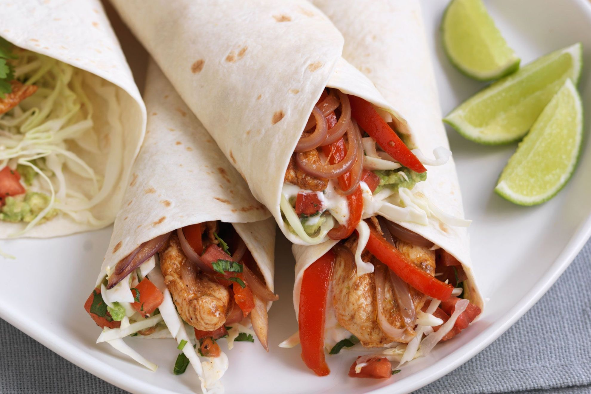

Fajitas recipe
Back to index

Description
Las fajitas son un plato originalmente mexicano,
como yo las conozco son con pollo, ternera o mixtas y con pimientos de varios colores
Ingredients
- Chicken or meat
- Tortilla de trigo
- Vegetables
Steps
- Cocinar las verduras hasta que suelten el agua
- Añadir la carne de pollo, ternera o mixta
- Cubrir con tortilla de trigo
- Listo a comer